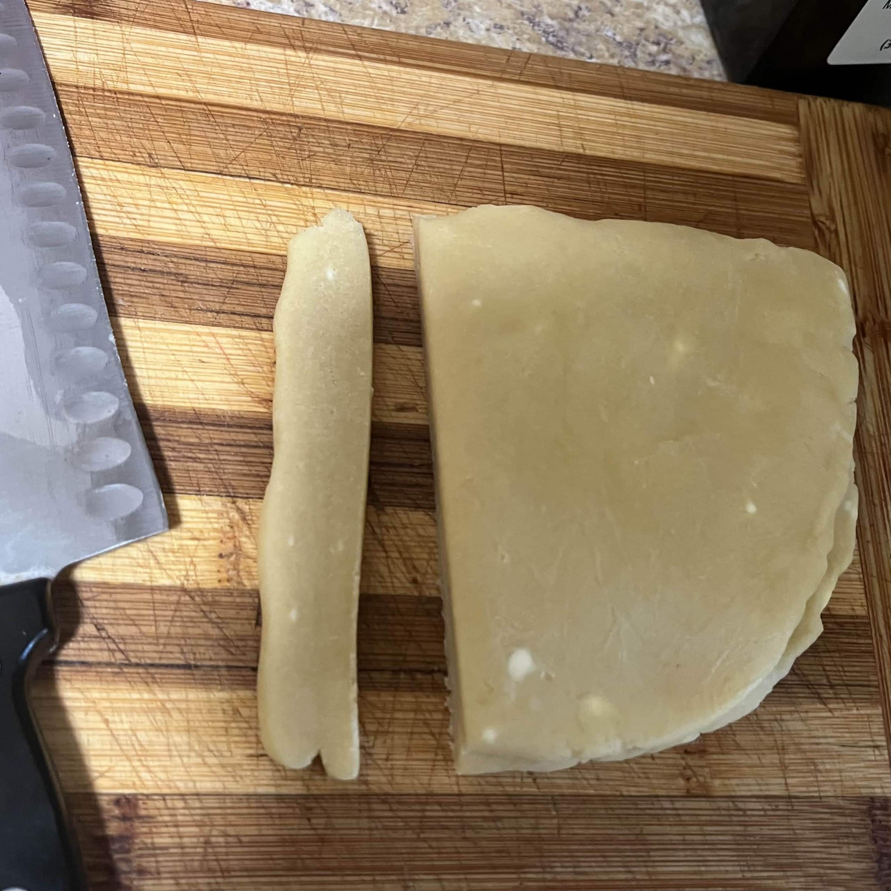

Equipment
Ingredients
Directions
- Combine all-purpose flour, powdered sugar, and salt in the bowl of a food processor. Pulse to combine. Add cold butter and pulse until the pieces are no larger than peas.
- In a small bowl, whisk together the egg yolk, vanilla, and 4 teaspoons cold water. Drizzle over the flour mixture. Pulse until the dough forms a ball. Wrap the dough in plastic, flatten into a disk, and refrigerate for at least 30 minutes (or up to 3 days).
-
Cut the chilled dough in half.
>View image
 -
Roll one half into ropes and press along the sides of the pan.
>View image

- Press the remaining dough into the bottom of the pan, ensuring there are no gaps where the sides and bottom meet.
- Smooth the bottom with a floured measuring cup if needed. Freeze the pan for 15–20 minutes until firm.
- Preheat oven to 350°F. Prick the dough all over with a fork and press foil tightly against the surface. Place the pan on a baking sheet. Bake for 15–20 minutes, until edges are golden. Remove the foil. For a parbaked crust, bake an additional 15–20 minutes until golden. For a fully baked crust, bake 10–15 minutes longer, until the edges are deep golden brown.
- Use reserved raw dough scraps to patch any cracks. Let the crust cool completely before filling.
Nutrition facts
I have absolutely no idea! Please feel free to hit me up if you calculate this 😆
Notes
- Adapted and updated from this recipe.
- Dough can be refrigerated for up to 3 days or frozen for up to 2 months. Thaw frozen dough overnight in the refrigerator.
- Baked crust can be stored airtight at room temperature for 1 day.